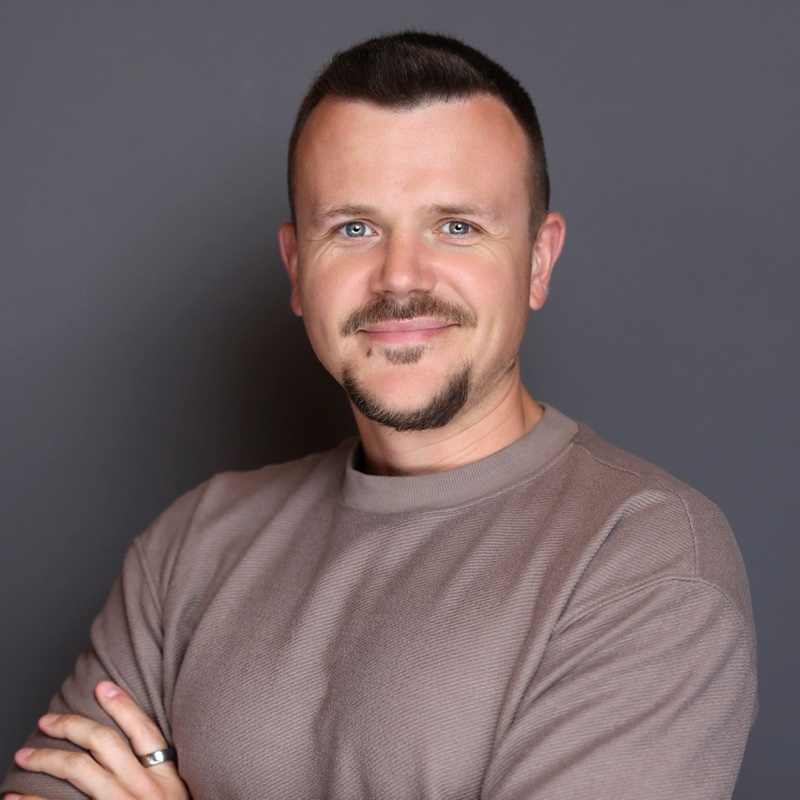

Multi-sponsor platforms
The same deal flow, sold to five or ten companies in your vertical — including your competitors. Not curated to your ICP.
Accelerator-as-a-Service
Raisable designs, builds, and runs a fully managed accelerator under your brand — turning top founders into a curated cohort of post-revenue startups matched to your ICP, and turning that cohort into customers.
The problem
The startups in our pilot cohort are post-revenue and growing fast. The vendors that engaged them early are now embedded in their stack. Everyone else is pitching against an incumbent.
You've probably tried the existing channels:
The same deal flow, sold to five or ten companies in your vertical — including your competitors. Not curated to your ICP.
One-off touchpoints. No follow-up funnel, no data.
Reads as pushy, not helpful. Founders remember.
Takes headcount and a year of lead time — and rarely attracts top founders to an unproven brand.
By Series A, the stack is set — and switching costs work against you.
The solution
Raisable designs, builds, and operates a fully white-labeled accelerator under your brand. You set the strategic goal — customer acquisition, deal flow, ecosystem visibility — and we run everything end to end.
How the funnel works
What's included
Exclusivity
Most accelerator platforms sell the same startups to every sponsor in your category — all competing for the same deal flow, founder attention, and data. We work with one company per vertical, per cohort.
No competitor sees your shortlist. No founder fields pitches from your rivals in the same room. The curriculum, the selection rubric, and the funnel are built around your ICP — not a generic program shared across a dozen logos.
What your company gets
700+ applications filtered to 20–40 startups matched to your ICP — you approve the shortlist.
Startups onboard onto your product during the program, pre-Series A, while switching cost is zero.
The cohort beta-tests your launches; direct feedback from your exact target segment.
Founders post organically about the program throughout the cohort; your brand associated with founder support, not sales pressure.
Structured 1:1 warm introductions between your team and cohort founders.
Exclusive sponsor presence in front of 50+ VCs — at the exact moment startups decide on key vendors.
Pilot case study
Recent program metrics:
Who it's for
Heads of Growth, Heads of Startup Programs, and CMOs who need a repeatable pipeline into pre-Series A companies before competitors engage. Your brand, your ICP, our operations.
Funds that want proprietary, vertical-specific deal flow with first look — without hiring a head of accelerator and building a program from scratch. 100+ warm intros to post-revenue startups per cohort, plus visibility into the entire applicant pool.
Innovation offices building structured startup pipelines into a region or sector.
The team
Co-Founder
Accelerator program designer and director. Built programs for Stanford GSB, Sequoia, Accel, Lightspeed, and Index. Ex-StartX (Stanford's accelerator). Has sponsored 500 Startups, Plug and Play, Endeavor, and Alchemist.
StartXStanford GSB

Co-Founder
Serial entrepreneur; lecturer and mentor at Stanford and Alchemist Accelerator. Previously raised $2M, built to 2M+ users and $200M in transactions at XEN.
StanfordSTVPX1
Program Lead & Advisor
Serial entrepreneur. Head of IR & Partnerships at Principle. Previously Head of Growth & Startups at Inworld AI, where she ran the 700-application consumer accelerator.
Inworld
Track record
Get started
We take one sponsor per vertical, per cohort. Tell us your ICP and your goal, and we'll show you what a cohort would look like — timeline, funnel, budget, and the reporting you'd take to your leadership.
Prefer email? og@raisable.vc
FAQ
3–4 months to design, build, and market the program, including application review and cohort selection. The program itself runs 4–6 weeks.
Outbound sourcing through our founder network plus inbound applications, screened against your ICP criteria. You review the shortlist before any offers go out.
We build the program around a measurable funnel: applications → cohort → activated users of your product → revenue. You get reporting at each stage, and we define success metrics with you in the design phase — before you commit.
Startups pay nothing and give up no equity. They receive expert sessions, warm VC introductions, and partner credits. The program is funded by the sponsor.
Minimal. We handle operations, programming, and founder communications. Your team shows up for private office hours, speaking slots, and Demo Day — structured touchpoints, not management.
Yes. It's fully white-labeled under your brand and designed to complement, not replace, existing initiatives.
ICP criteria are defined in the design phase. The application and screening rubric are built around them, and you approve the shortlist before offers are extended.
It's not just founder-friendly — it's better for you. Equity-taking programs create adverse selection: founders with traction won't accept dilution, so you get the ones who have no other option. Credit-only programs attract everyone and filter no one.
Equity-free and sponsor-funded means: higher-quality founders (serial entrepreneurs with revenue), better brand perception (you're adding value first, which opens real commercial conversations), and aligned incentives (we help startups raise, so they grow into bigger customers of yours).